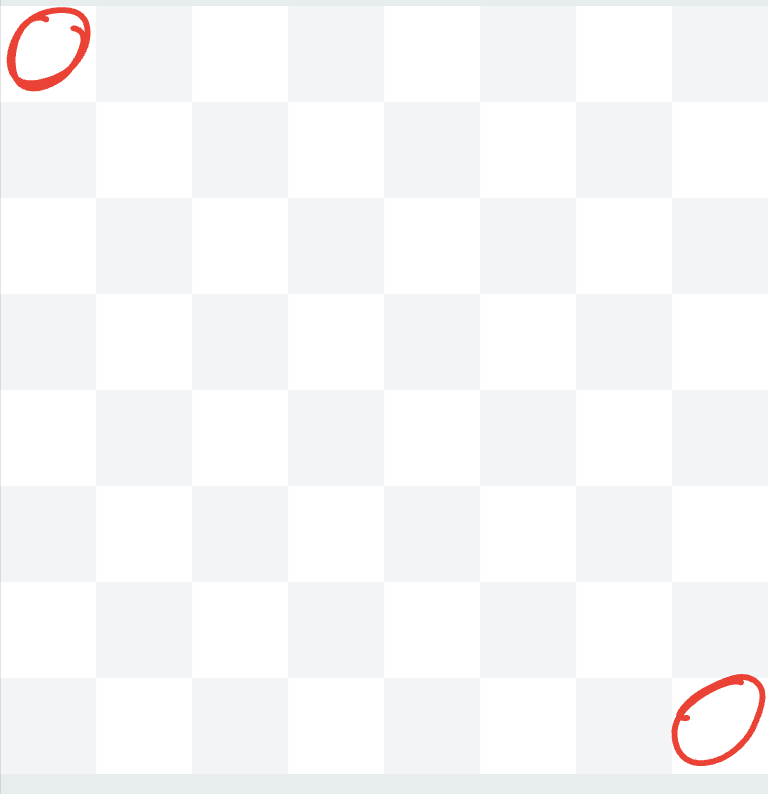
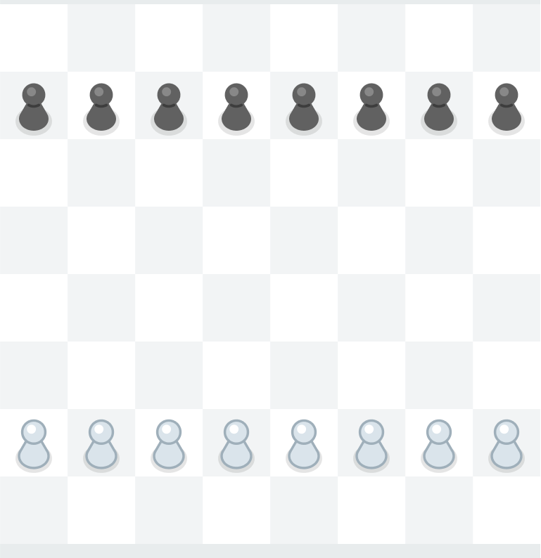
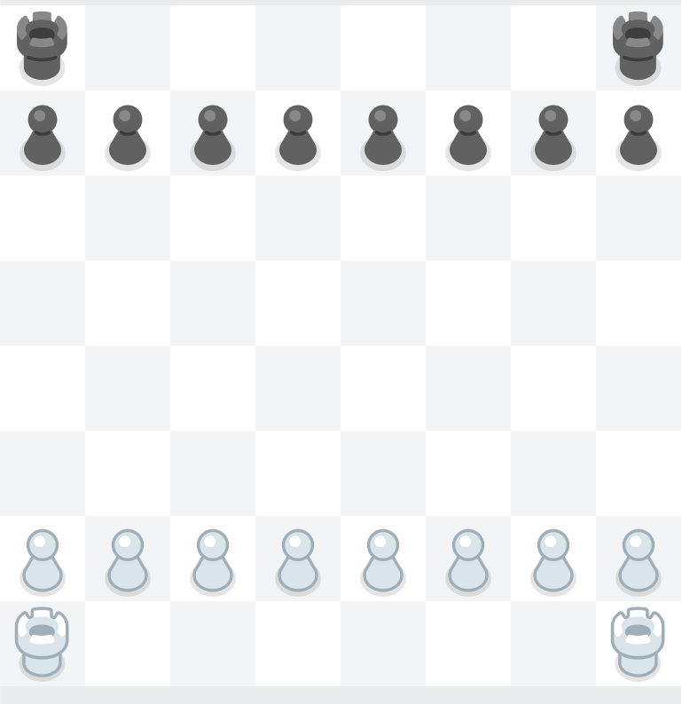
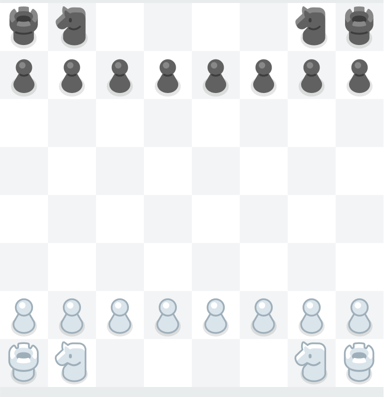
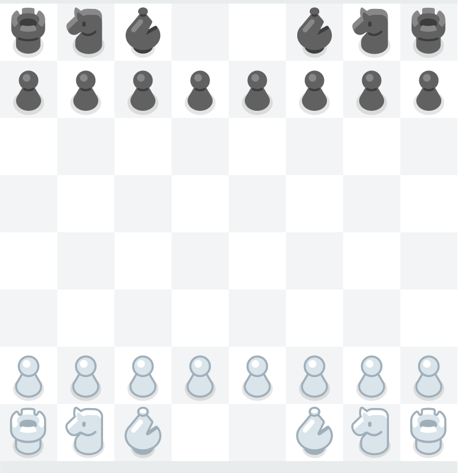
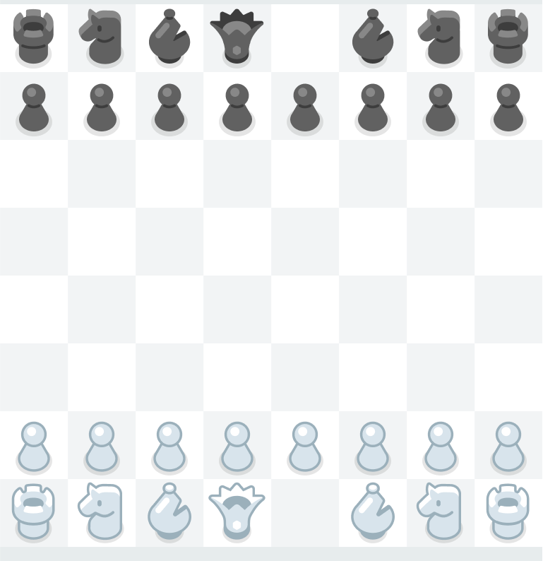
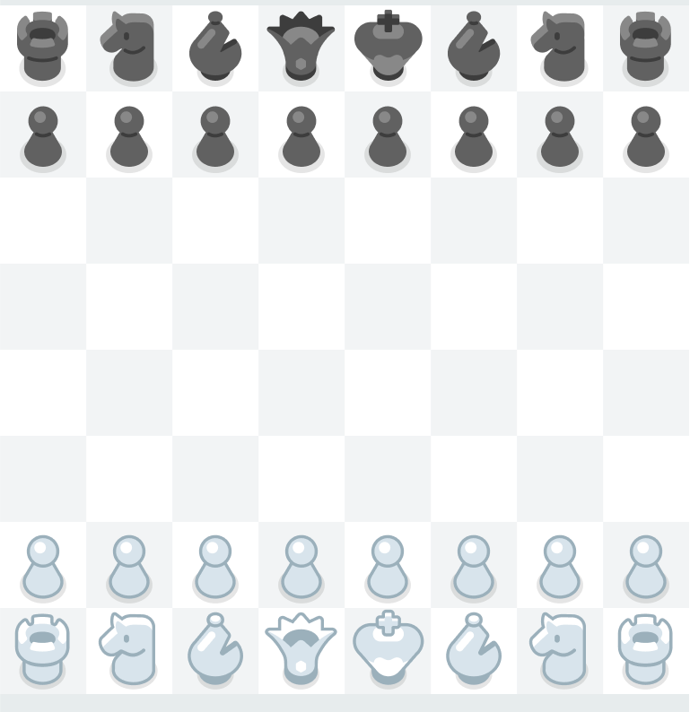

Chess seems complex at first glance, but it's actually pretty simple.
There are 2 sides in chess: White and Black. White always has the first move, no matter what.
Chess is a game played on an 8x8 grid, with 16 pieces for each player. Each piece has a different way of moving, and some even have their own unique mechanics. The goal of the game is to checkmate your opponent's king, essentially trapping it on a position where it cannot move anywhere.
Ending the Game: Stalemate
It is important to understand that checkmate is not the only way to end the game. You can also Stalemate, or tie the game:
Agreement: Players decide to agree to a draw.
Insufficient Material: Cases where it is literally impossible to force a checkmate.
Threefold Repetition: A player repeats the same moves 3 times in a row.
50-Move Rule: 50 consecutive moves occur without a pawn move or a capture.
How to Set up The Board

1. Orientation: Each player must have a white square on their right side.

2. The Pawns

3. The Rooks

4. The Knights

5. The Bishops

6. The Queen: Must be in her own color.

7. The King: Next to the Queen.
Now that you have learned how to set up the board, you should get to know each piece and how they work.